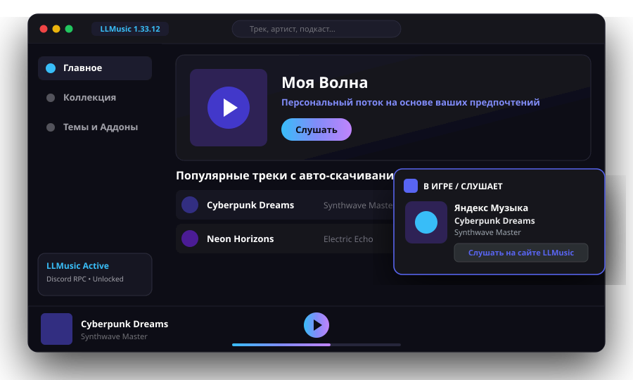

Музыка по-новому!
LLMusic — это проект с открытым исходным кодом, который глубоко интегрируется с Яндекс Музыкой. Мод добавляет Discord Rich Presence, кастомные темы оформления, скрипты, встроенный загрузчик треков и разблокированные функции.

Все, чего не хватало в стандартном клиенте
LLMusic улучшает взаимодействие с музыкой на рабочем столе, добавляя полезный инструментарий и полную свободу персонализации.
Discord Rich Presence
Транслируйте играющий трек, имя исполнителя, таймлайн и обложку альбома в ваш статус Discord в реальном времени с кликабельными кнопками перехода.
Кастомные темы & Стили
Меняйте визуальное оформление приложения: цвета, фоновые изображения, градиенты и шрифты. Выбирайте из библиотеки готовых тем сообщества.
Скачивание треков
Сохраняйте любимые треки, альбомы и плейлисты в высоком качестве (320 kbps / FLAC) прямо на свой компьютер без лишних действий.
Компактный мини-плеер
Удобное всплывающее окно мини-плеера поверх всех приложений: переключайте треки, ставьте лайки и регулируйте громкость во время работы или игр.
Разблокированные функции
Все премиум-настройки кастомизации разблокированы: скрытие версий из заголовка окна, отключение брендинга в статусах и продвинутые эксперименты.
Автоматические обновления
Встроенная система обновлений вовремя уведомит о свежем патче и обновит модификацию в один клик без необходимости переустановки.
Спасибо сообществу и звездочётам!
LLMusic развивается благодаря поддержке комьюнити. Поставьте звезду репозиторию на GitHub, делитесь идеями и участвуйте в развитии проекта.